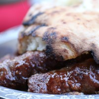
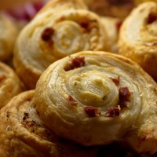
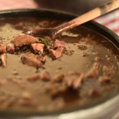

Buy
About
Contact
Welcome to Montenegrin cuisine
Montenegro has a diverse array of food options to try for everyone's taste, from soup to cevapi you can't go wrong with anything you choose.
Order now
Types of dishes

Often served with bread, cevapi are a sausage made of minced beef meat.

Burek is a pie often made from grounf beef, cheese, or spinach

Pasulj is a stew made from beans and dried beef
Priganice are a type of fried pastry similar to zeppoles
"Strongly resembling Mediterranean cuisine, Montenegrin cuisine offers a healthy, balanced, and delicious diet that anyone will love!"
-Adrian, Website Owner
Order delicious food now!
Click the button to the right for quick and easy delivery!
Order now